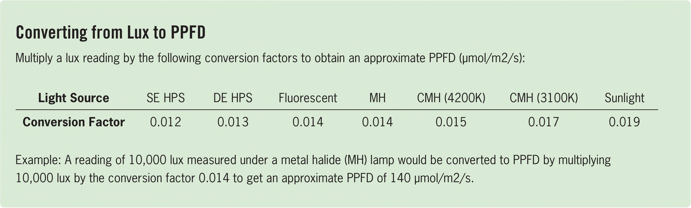

Converting from Lux to PPFD Multiply a lux reading by the following conversion factors to obtain an approximate PPFD (pmol/m2/s): Light Source SE HPS DE HPS Fluorescent MH CMH (4200K) CMH (3100K) Sunlight Conversion Factor 0.012 0.013 0.014 0.014 0.015 0.017 0.019 Example: A reading of 10,000 lux measured under a metal halide (MH) lamp would be converted to PPFD by multiplying 10,000 lux by the conversion factor 0.014 to get an approximate PPFD of 140 pmol/m2/s. how light is perceived by the human eye. The human eye is most sensitive to green and yellow, whereas plants are most sensitive to blue and red. Most of the light level recommendations for crops are not based on lux; they instead use photosynthetic photon flux density (PPFD), which is measuned by photosynthetically active radiation (PAR) meters. PAR Meter PAR is an acronym for photosynthetically active radiation. PAR light falls within a wavelength range that is visible to plants and that plants can use to power photosynthesis. PPFD is an acnonym for photosynthetic photon flux density. PPFD measunes how many photosynthetically active photons, measured in pmol, are landing in a square meter (m2) each second (s); the unit used is pmol/m2/s. PAR meters are the preferred meter for measuring light intensity in a horticultural environment but they tend to be more expensive than lux meters. Daily Light Integral (DLI) Meter A PPFD measurement shows light intensity per square meter per second. A DLI measurement shows the light intensity delivered per square meter per day. DLI is a total of all the PPFD readings for each second throughout the day. The unit used is mol/m2/d. DLI does not use pmol because the numberwould be huge: 1 mol is 1,000,000 pmol. DLI is useful because it measures the light a plant has access to throughout the day, not just at a single moment. Indoors it is fairly easy to calculate the DLI with a single PPFD measurement because the light levels do not fluctuate throughout the day as they do outdoors. For example, a PPFD reading indoors of 100 pmol/m2/s is converted to DLI with the following steps: 1 Multiply PPFD by 60 seconds to get total pmol per m2 per minute. Example: 100 pmol/m2/s x 60 seconds = 6000 pmol/m2/minute 2 Multiply this number by 60 minutes to get pmol per m2 per hour. Example: 6000 pmol/m2/minute x 60 minutes = 360,000 pmol/m2/hour 3 Multiply this number by the number of hours the lights are on; in this example, the lights are on for 20 hours a day. Example: 360,000 pmol/m2/hour x 20 hours = 7,200,000 pmol/m2/day 4 Lastly, divide by 1 ,000,000 to convert pmol to mol. Example: 7,200,000/1,000,000 = 7.2 mol/m2/day DLI meter that measures total light delivered in 24 hours using mol/m2/day 36 DIY HYDROPONIC GARDENS
